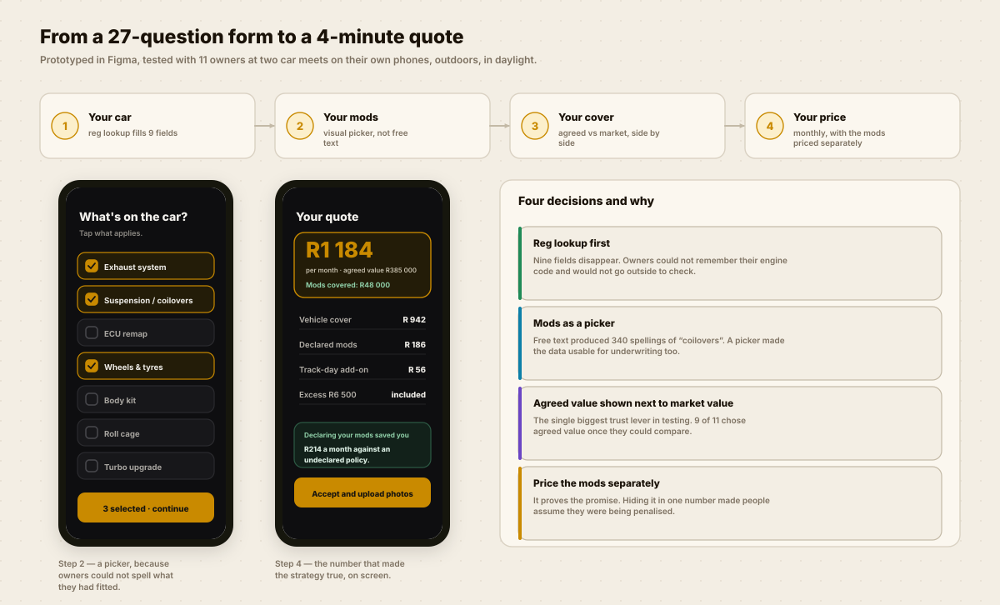
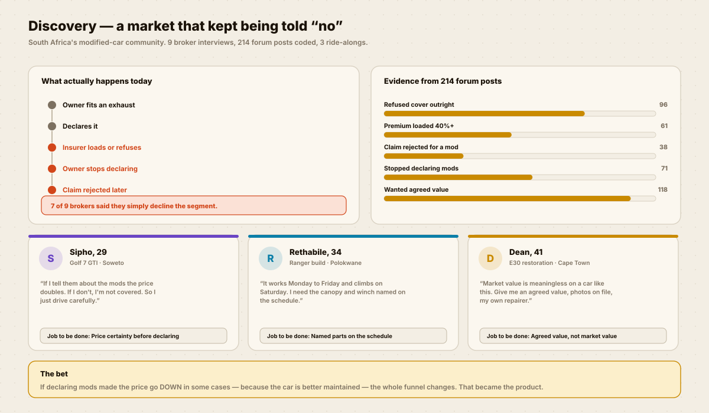
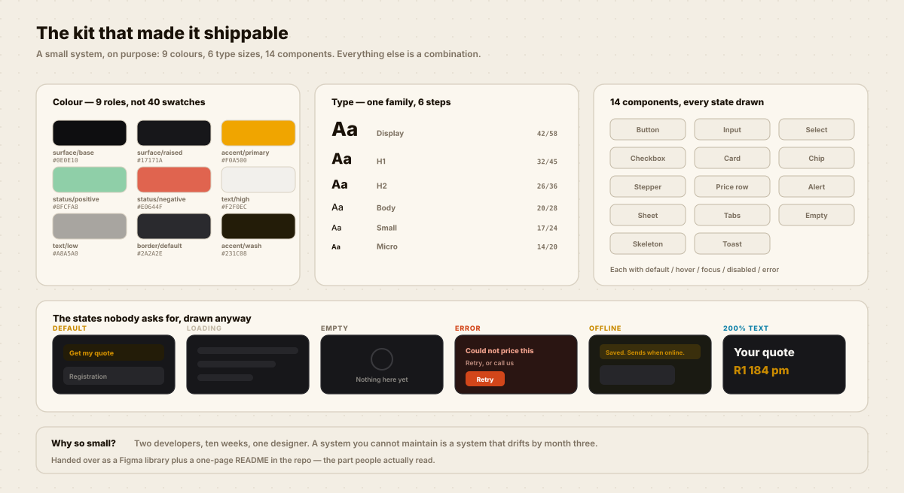

UX / UI & product design
INSURANCE FOR THE CARS
EVERYONE ELSE REFUSED.
South Africa’s modified-car owners were being loaded, declined, or quietly under-insuring themselves. I took it from a market question to a live product with a four-minute quote.

The two screens the whole product turns on: what is fitted, and what that costs.
A MARKET THAT KEPT BEING TOLD NO.
Fit an exhaust, declare it, get loaded or declined. So people stopped declaring — and then found out at claim stage that they were not covered.

The trap
Declaring a modification raised the premium. Not declaring it voided the claim.
Both options were bad, so people chose the one that hurt later.
The bet that became the product
A modified car is often a better-maintained car. If declaring can make the price go down in some cases, the whole funnel changes — and the insurer gets accurate risk data for the first time.
HOW I GOT THERE.
Ten weeks, four artefacts, one very opinionated underwriter.
Design working on the maths
I could not design the pricing screen until I understood the model, so I spent two days with the underwriter building the loading table in a spreadsheet.
That is where the “declared can be cheaper” rule actually got written.
What it unlocked
Because I knew which inputs moved the number, I could cut 18 questions that did not — and defend the cut with the underwriter’s own model.
Testing where the users are
Two Saturday car meets, 11 owners, their own phones, in direct sunlight.
Three contrast problems and one unreadable disclaimer only showed up because we were outside.
What failed the test
My first pricing screen showed one number. People assumed they were being penalised for the mods and half of them abandoned. Splitting the price into lines fixed it.

PRICE A CAR.
The real logic from the quote step. Tick what is fitted and watch both numbers move — including the one that makes the whole strategy true.
What’s on the car?
Monthly premium
R1 128
3 modifications
A SMALL KIT, SHIPPED FAST.
Nine colour roles, six type sizes, fourteen components — and every awkward state drawn before launch.
WHERE IT LANDED.
A 0→1 product, so the honest framing is “what we can show”, not a before-and-after.
What testing proved
Showing agreed value next to market value was the single biggest trust lever. Nine of eleven switched once they could see both, and every one of them said the comparison was the reason.
What I cannot claim
I do not have conversion or retention data — I designed and handed over, and the business does not publish it. Anything I said about revenue here would be invented, so I have left it out.
THE HONEST BIT.
A 0→1 product with a small team leaves visible seams.
What I would do differently
- The modification picker has seven options. Real builds have dozens, and “other” is doing far too much work. It needs a searchable catalogue with underwriter-approved categories behind it.
- I tested with owners at car meets, which selects for enthusiasts who are already engaged. The person who fitted one exhaust and does not consider themselves a “car person” is under-represented in my sample.
- The claims journey is not designed. The quote is lovely and the moment you actually need the product is a phone number, which is the wrong way round.
- Ten weeks meant no dark-mode variant and no proper motion spec. Both are on the list, neither shipped.
WANT THIS
ON YOUR PRODUCT?
Tell me the one flow that matters most to your business and what it currently costs you. I will come back with what I would research first and what I would ship first.